CỤM GHẾ SAU NO.1 (cho bên phải) > LẮP RÁP |
| 1. LẮP ỐNG BẢO VỆ PHÍA SAU |
| 2. LẮP CỤM KHOÁ GHẾ SAU TRÁI |
| 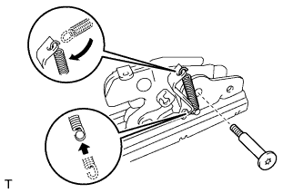 |
Dùng khẩu hoa khế "T40", lắp khoá bằng bu lông.
Lắp lò xo đỡ.
| 3. LẮP CỤM KHOÁ GHẾ SAU PHẢI |
| 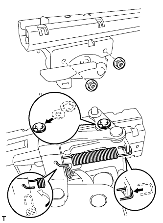 |
Lắp khoá bằng 2 đai ốc.
Lắp vòng hãm chữ E, vòng đệm và lò xo đỡ như được chỉ ra trên hình vẽ.
| 4. LẮP CỤM DÂY CHẰNG GHẾ ĐÃ GẤP NO. 1 |
| 5. LẮP BỌC NỆM GHẾ SAU NO.1 BÊN PHẢI |
| 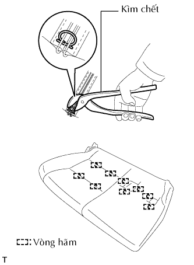 |
Dùng kìm mỏ quạ, lắp bọc nệm ghế vào lót nệm ghế bằng 9 vòng hãm mới.
Lắp bọc nệm ghế vào khung nệm ghế.
| 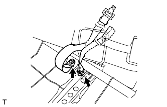 |
Lồng các đai an toàn loại 2 điểm qua lỗ trong bọc nệm ghế. Sau đó lắp các dây đai vào khung nệm ghế bằng 2 bu lông.
| 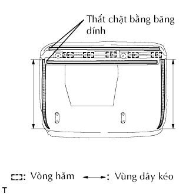 |
Đóng khoá cài.
Dùng kìm mỏ quạ, lắp 5 vòng hãm mới.
Đóng băng dính.
| 6. LẮP CỤM NỆM GHẾ SAU NO.1 BÊN PHẢI |
Dùng đầu khẩu đầu hoa khế T40, lắp 2 ray trượt ghế vào nệm ghế bằng 2 bu lông.
Lắp tay điều chỉnh trượt ghế.
Nhấc tay điều chỉnh trượt ghế và trượt ghế đến vị trí trước nhất.
Dùng đầu khẩu đầu hoa khế T40, lắp 4 bu lông phía sau ray trượt ghế.
| 7. LẮP CÁP ĐIỀU KHIỂN KHOÁ GHẾ SAU PHẢI |
| 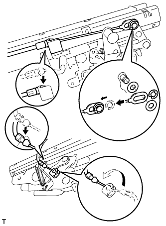 |
Lắp các cáp điều khiển như trong hình vẽ.
Lắp phanh hãm chữ E và 2 vòng đệm.
| 8. LẮP CỤM BẢN LỀ GHẾ SAU TRÁI |
| 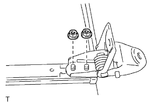 |
Lắp bản lề bằng 2 đai ốc.
| 9. LẮP CỤM BẢN LỀ GHẾ SAU PHẢI |
Lắp bản lề bằng 2 đai ốc.
| 10. LẮP THANH NỐI CHÂN GHẾ NO.1 |
| 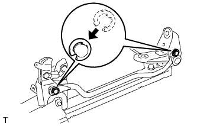 |
Lắp thanh nối chân ghế bằng 4 tấm và 2 phanh hãm chữ E.
| 11. LẮP BẢO VỆ RAY TRƯỢT GHẾ PHÍA DƯỚI TRÁI |
Cài khớp 3 vấu để lắp bảo vệ ray trượt ghế.
Lắp vít.
| 12. LẮP BẢO VỆ RAY TRƯỢT GHẾ PHÍA DƯỚI PHẢI |
Cài khớp 3 vấu để lắp bảo vệ ray trượt ghế.
| 13. LẮP NẮP CHE KHOÁ GHẾ SAU PHẢI |
| 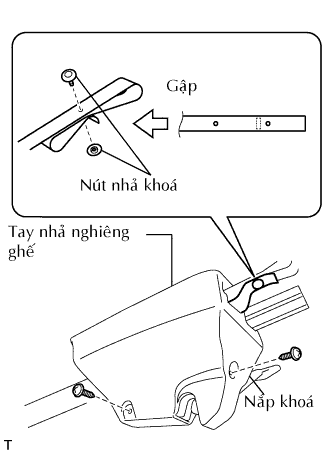 |
Luồn tay nhả nghiêng ghế qua lỗ trong nắp khoá. Sau đó lắp nắp khoá bằng 2 vít.
Gập tay nhả nghiêng ghế như được chỉ ra trên hình vẽ. Sau đó lắp 2 nút nhả khoá.
| 14. LẮP NẮP CHE BÊN TRONG KHOÁ GHẾ SAU TRÁI |
| 15. LẮP NẮP CHE BÊN NGOÀI KHOÁ GHẾ SAU TRÁI |
| 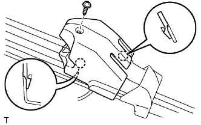 |
Cài khớp 2 vấu để lắp nắp khoá.
Lắp vít.
| 16. LẮP CỤM ĐAI TRONG GHẾ SAU NO.1 BÊN PHẢI |
| 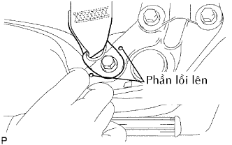 |
Lắp đai an toàn bằng bulông.
| 17. LẮP TỰA TAY GHẾ SAU TRÁI (w/ Tựa tay ở giữa) |
Lắp tay bằng đai ốc.
| 18. LẮP TỰA TAY GHẾ SAU PHẢI (w/ Tựa tay ở giữa) |
Lắp tay bằng đai ốc.
| 19. LẮP BỌC LƯNG GHẾ SAU NO.1 BÊN PHẢI |
| 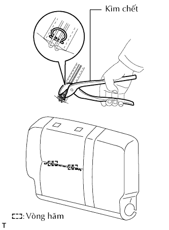 |
Dùng kìm mỏ quạ, lắp bọc lưng ghế vào lót lưng ghế bằng 2 vòng hãm mới.
Lắp bọc nệm ghế vào khung lưng ghế.
| 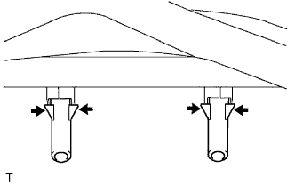 |
Cài khớp 4 vấu để lắp 2 thanh đỡ tựa đầu.
w/o Tựa tay ở giữa:
Dùng kìm mỏ quạ, lắp 10 vòng hãm mới.
| 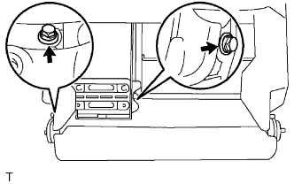 |
w/o Tựa tay ở giữa:
Lắp tựa tay bằng 2 bạc và 2 bu lông.
| 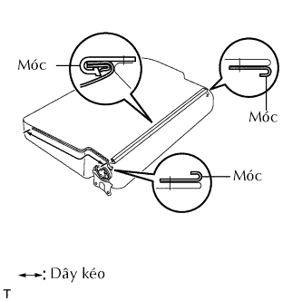 |
Kéo khoá và cài khớp các móc.
| 20. LẮP CỤM LƯNG GHẾ SAU NO.1 BÊN PHẢI |
| 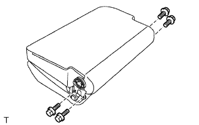 |
Lắp lưng ghế bằng 4 bu lông.
| 21. LẮP NẮP CHE NGHIÊNG GHẾ SAU NO.1 TRÁI |
| 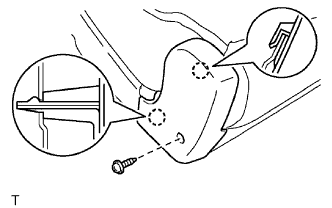 |
Cài khớp 2 vấu để lắp nắp nghiêng ghế.
| 22. LẮP NẮP CHE NGHIÊNG GHẾ SAU NO.1 PHẢI |
| 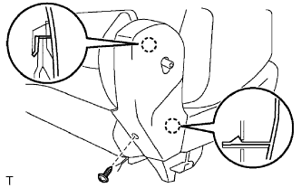 |
Cài khớp 2 vấu để lắp nắp nghiêng ghế.
| 23. LẮP TAY CẦM NHẢ BỘ ĐIỀU CHỈNH NGHIÊNG GHẾ PHẢI |
| 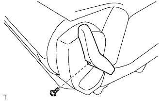 |
Lắp tay nhả bằng một vít.
| 24. LẮP CỤM TỰA ĐẦU GHẾ SAU |